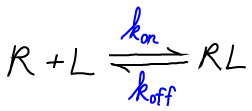
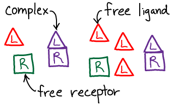
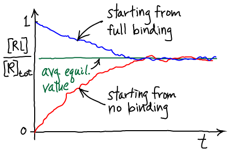
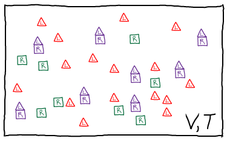
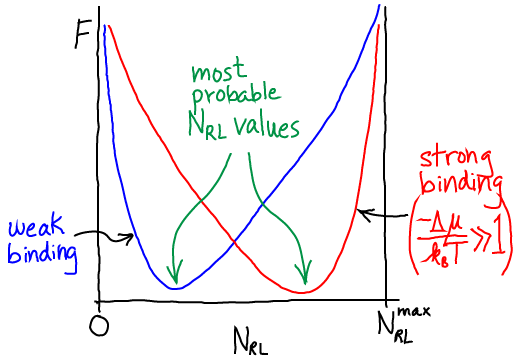

We will use the symbol "R" for receptor, "L" for ligand, and "RL" for the bound complex. Although it is often the case that R is a protein and L a small molecule, the analysis we develop could apply equally well if L were a second protein.
We will use the standard $\conc{\ldots}$ notation for concentration. Note that, by convention, the concentration of a species refers only to the specific form named. Thus, for the receptor R, which can be either "free" (unbound) or bound, we have \begin{align} \conctot{R} &= \conc{R} + \conc{RL} \nonumber \\ \conctot{L} &= \conc{L} + \conc{RL} , \label{totconc} \end{align} with a similar expression for ligand L.This leads to the basic equation
\begin{equation} \label{rldt} \frac{ d \conc{RL} }{ dt } = \conc{R} \conc{L} \, \kon - \conc{RL} \, \koff , \end{equation} where $\kon$ is the number of binding events per second per unit volume which would occur (nominally) if both $\conc{R} = \conc{L} = 1M$, and $\koff$ is the probability to unbind per second. Note that $\kon$ has to have "funny units", which reference a standard concentration, because a binding event depends on the concentrations of two molecules.
The figure sketches sample solutions of the behavior described by \eqref{rldt}. The time evolution of the fraction of bound receptors is shown for two different initial conditions - but a given system will always relax to the same equilibrium. Note that noisy lines are purposely shown: even though solutions to \eqref{rldt} are perfectly smooth, actual behavior is stochastic as sketched.The equilibrium \eqref{equil} is usually re-written so that all concentrations are collected together, yielding \begin{equation} \label{kd} \frac{ \conceq{R} \, \conceq{L} }{ \conceq{RL} } = \frac{ \koff }{ \kon } \equiv \kd \end{equation} where we have defined the dissociation constant $\kd$ in the last equality. Note that a smaller $\kd$ implies stronger binding.
The equilibrium point - the equilibrium concentrations $\conceq{RL}$, $\conceq{R}$, and $\conceq{L}$ - depends on $\conctot{R}$ and $\conctot{L}$. That is, even for a given type of receptor and ligand, the fraction of bound complexes will depend on total concentrations of R and L. One consequence is that a weaker-binding ligand (higher $\kd$) could result in more bound complexes than a stronger-binding ligand (lower $\kd$) - if enough of the weaker binder is placed in solution.
For reference, we note that the dissociation constant is the basis for defining the "standard" free energy change of binding: \begin{equation} \label{dgbind} \frac{ \conceq{R} \, \conceq{L} }{ \conceq{RL} } = \kd = 1 \mbox{M} \, e^{ \left. \dgbind \right/ k_BT } . \end{equation} $\dgbind$ refers to a standard state in which concentrations are measured in molar units. Note that a different choice of units (and pre-factor on the right) would lead to a different $\dgbind$ value for the same system.
In our model, we will have ideal gases of R, L, and RL particles. We will assume, however, that there is a (free) energy change of $\dmu$ for every bound complex, or $\nrl \dmu$ total. Presumably $\dmu < 0$ for favorable binding, although our formalism does not require that. The total free energy thus consists of the three ideal gas free energies, plus the binding term. \begin{equation} \label{ftot} F(\nr, \nl, \nrl) = \fidl(\nr) + \fidl(\nl) + \fidl(\nrl) + \nrl \dmu \end{equation} Note that all three "gases" are in the same volume at the same temperature. The explicit form for $\fidl$ has been derived separately.In analogy to Eqs. \eqref{totconc}, the numbers of particles are not independent because a binding event changes the identity of a molecule. \begin{align} \label{ntot} \nrtot &= \nr + \nrl \nonumber \\ \nltot &= \nl + \nrl \end{align}
The free energy then gives us the probability to observe a given $\nrl$ value via
\begin{equation} \label{nrlprob} p(\nrl) \propto e^{ -F \left. ( \nrtot - \nrl, \, \nltot - \nrl, \, \nrl) \right/ k_B T } . \end{equation} The reason for this is explained in our discussion of free energy in a concentration gradient. In brief, the Boltzmann factor of a free energy is defined to be the sum of all probability consistent with the specified condition - the $\nrl$ value in our case.
In the limit of many molecules, the equilibrium point of the system is well approximated by the most probable value, which we can find by minimizing $F$ in Eq. \eqref{ftot}. Some algebra is required to get the derivative, but setting it to zero, collecting logs, and exponentiating, yields \begin{equation} \label{idlequil} \frac{ \conceq{R} \, \conceq{L} }{ \conceq{RL} } = \frac{1}{ \lambda^3 e } e^{ \left. \dmu \right/ k_BT} . \end{equation} This is the same form as Eq. \eqref{kd} or \eqref{dgbind}: the particular ratio of concentrations on the left is seen to depend only on constant parameters of the system. We can see further that the ratio is proportional to the Boltzmann factor of the free energy change per complex formed. In other words, $\dmu = \dgbind + \mbox{const}$.